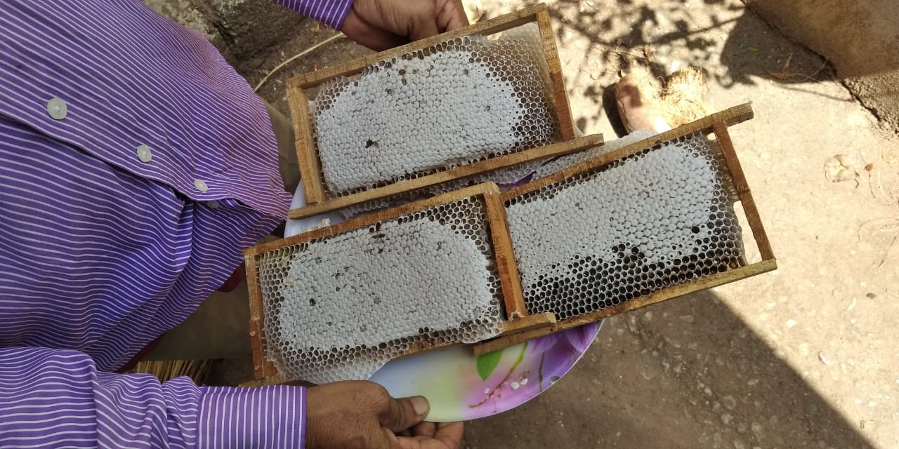
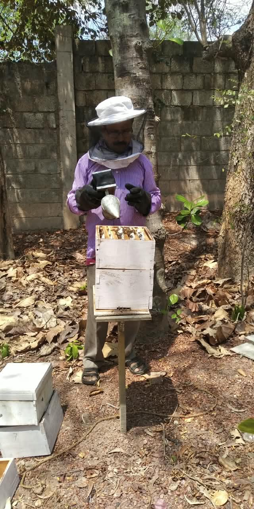
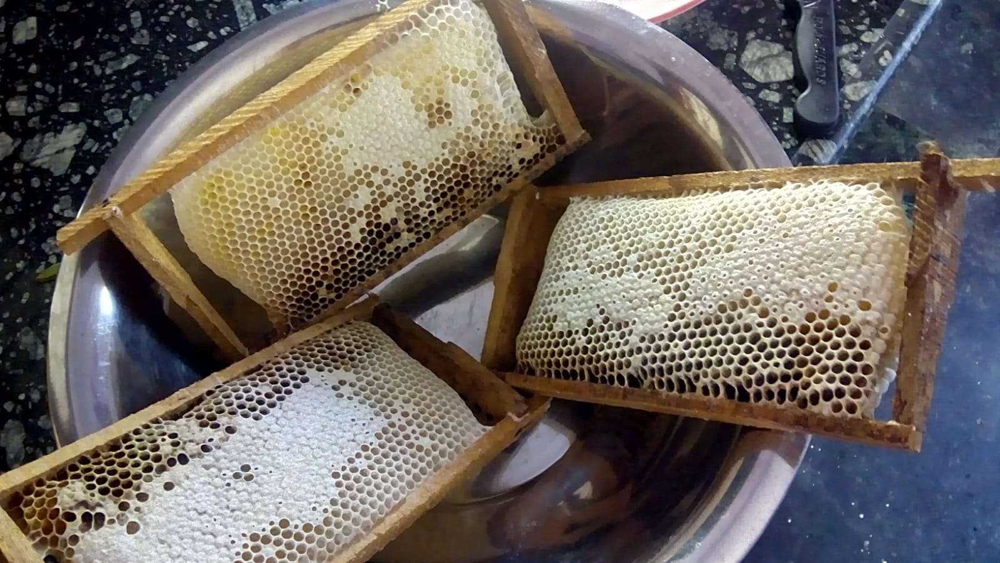
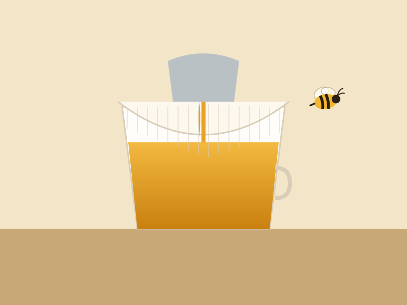
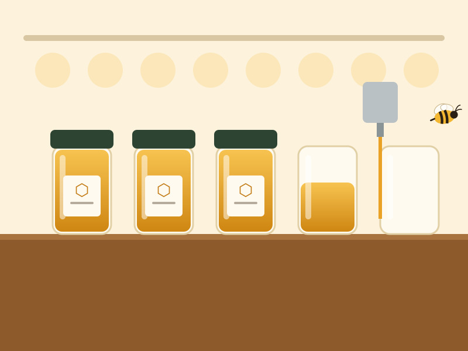
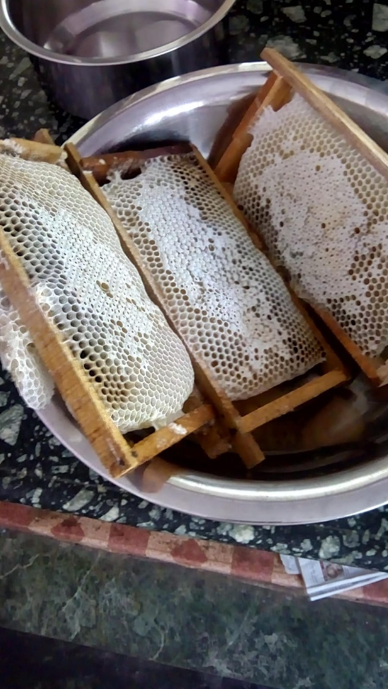

Hive to bottle
Six unhurried steps, one short journey.
Everything that happens between the flower and your spoon takes place here at the garden — usually within a few days.
-
1
 All season
All seasonThe bees forage
Worker bees fly up to three kilometres from the hive, visiting thousands of flowers to collect nectar and pollen. What's in bloom decides the honey's colour and taste.
-
2
 Every 7–10 days
Every 7–10 daysWe care for the hives
We check each colony for health, space and a laying queen, and add honey boxes as the flow builds. Healthy bees make better honey.
-
3

When it's readyWe wait for capped comb
The bees fan the nectar until it thickens, then seal each cell with wax. We only take frames that are mostly capped — the bees' own signal that the honey is ripe.
-
3

When it's readyWe remove frame by frame
We inspect the hives and a small amount of smoke is gently introduced near the hive entrance to calm down the bees
-
5
2–3 days
Collect all capped bee hives
Brought home to strain it
-
4
 Same day
Same dayUncap & spin — cold
We slice off the wax caps and place the frames in a hand-cranked extractor. Spinning flings the honey out; the empty comb goes straight back to the bees to refill.
-
6
 Bottled to order
Bottled to orderHand-filled &
We fill new clean jars by hand, seal them
From the garden
Harvest days in pictures
A few moments from the hives, the extractor and the bottling table.






Taste this season's batch
വൻതേൻ · Indian Rock Bee Honey, in 250 g, 500 g and 1 kg.